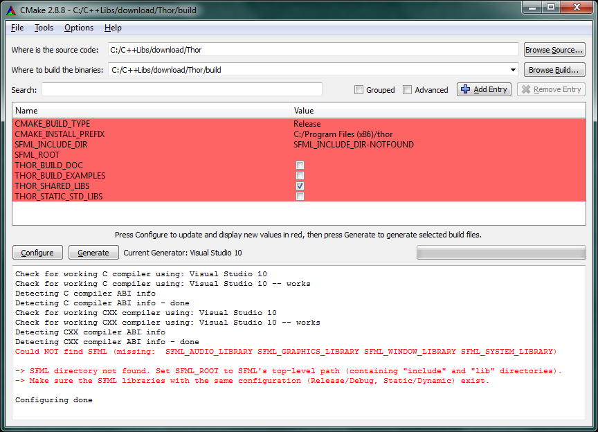
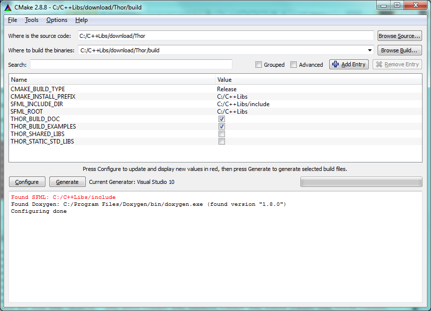

Installation Tutorial
In this tutorial, I try to teach you how to install Thor with the CMake build system and how to use it in your projects.
1. Compile SFML
Before you are able to build Thor, SFML must be compiled. Make sure that you use a recent Git revision that is compatible with Thor, a Git snapshot is provided on the download site. Use CMake to build and install SFML, there is a tutorial on the official SFML page.
Build the SFML configurations you like to use, and create static or dynamic libraries of the components system, window, graphics and audio.
Important: Do not only compile SFML, but also install it. That means, you have to build the install target. You do that as follows:
- Visual Studio solutions: Compile the INSTALL project.
- NMake: Execute
nmake installin the VS command line. - Make: Type
make installin the terminal. - MinGW: Type
mingw32-make installin the command line.
2. Configure Thor with CMake
I guess you already know CMake since SFML uses it, nevertheless I show you some steps specific to this library.
After cloning Thor from GitHub, run CMake. Here, I only explain how to work with the graphical user interface (cmake-gui). Specify the source and build directory, click "Configure" and choose your generator. After configuring, this might happen:
There occurs an error because Thor needs SFML and doesn't know where it is. Just set the SFML_ROOT variable to the root directory path of SFML (this was the CMAKE_INSTALL_PREFIX during SFML build). There are several options to customize:
- CMAKE_BUILD_TYPE – Either "Release" or "Debug"
- CMAKE_INSTALL_PREFIX – The directory which should contain the compiled libraries, include directories and maybe examples
- THOR_BUILD_DOC – Specifies if the Doxygen documentation is generated
- THOR_BUILD_EXAMPLES – Check the box if the example codes should be compiled
- THOR_SHARED_LIBS – Enable to build shared/dynamic libraries, disable to build static libraries
- THOR_STATIC_STD_LIBS – Enable to link compiler-specific CRT and standard libraries statically (usually not recommended)
Press "Configure" and choose the options according to your needs. In this example, C:/C++Libs is the path where all the include, lib, bin folders are located. Thus, this is the SFML_ROOT directory. Because I want Thor's include and binary files to be installed in this directory, too, the CMAKE_INSTALL_DIR contains the same path. The CMake window now looks like this:

Click "Generate", go to the build directory and build the project.
3. Link and compile Thor
As soon as your libraries are built, you can use Thor in your projects. The generated libraries have the following naming scheme:
| Dynamic Linkage, Release | thor |
| Dynamic Linkage, Debug | thor-d |
| Static Linkage, Release | thor-s |
| Static Linkage, Debug | thor-s-d |
If necessary, add the library prefixes ("lib") and file extensions (".lib", ".dll", ".so") corresponding to your platform and compiler.
When you link statically, you have to add SFML_STATIC to your project's preprocessor definitions.
If you compile with g++, you need to add the compiler flag -std=c++0x. On Linux, you should not forget to call ldconfig (possibly using sudo) in order to update the paths so that the binaries are found.